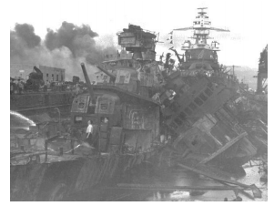
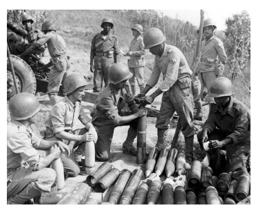
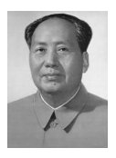
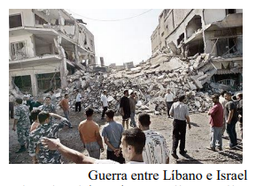

UM MUNDO EM CONFLITO: A GEOPOLÍTICA DO SÉCULO XX E AS DISPUTAS EM NOME DA IDEOLOGIA.
O Maior conflito bélico entre as nações mundiais teve curso na primeira metade do século XX e entrou para a história com o nome de II Guerra Mundial. A II Guerra Mundial teve como pano de fundo os resquícios do termino do grande conflito anterior que ao acabar, não conseguiu criar um clima de paz entre as nações europeias daquele período. A conjugação das forças aliadas impediu o avanço alemão impondo-lhes pesadas sanções ao termino da guerra. Tem início o processo que ficou conhecido na história como a Revolução Chinesa, movimento que instituiu uma nova ordem política e ideológica no país através das ideias socialistas. O período posterior a II Guerra Mundial foi chamado de Guerra Fria, uma vez que opunha dois blocos ideologicamente contrários, mas sem que com isso as potências hegemônicas da época entrassem em franco confronto armado. O período termina com uma reestruturação na geopolítica mundial, resultado das transformações ocorridas em solo europeu e que puseram um fim aos maiores símbolos da Guerra Fria, foram eles a queda do Muro de Berlin e o fim da Cortina de Ferro.
Para melhor compreensão do capítulo, é importante que durante a sua leitura você vá se fazendo os seguintes questionamentos:
- Quais os motivos e o desfecho da II Guerra Mundial?
- O que foi a Revolução Chinesa e como ela modificou o cenário político-ideológico da região?
- O que foi a Guerra Fria e quais as suas consequências para o mundo contemporâneo?
- Qual a importância do Oriente médio no cenário político em questão?
Contextualizando
Entre os anos de 1939 e 1945 o mundo vivenciou o maior conflito bélico de todos os tempos, trata-se da II Guerra Mundial, que envolveu diversos países de todos os continentes. A derrota alemã na I Guerra Mundial e a assinatura do Tratado de Versalhes que atribuía à Alemanha a maior culpa pelo início da guerra levou-a a perda das suas colônias e ao desarmamento do país.
CONSTRUINDO CONHECIMENTOS
A crise econômica era grande e o sentimento de derrota e fracasso da população alemã só aumentava. Neste contexto, o Partido Nacional-Socialista dos Trabalhadores Alemães, conhecido como Partido Nazista, encabeçado pelo seu líder maior, Adolf Hitler, chegou ao poder no ano de 1933. Este partido pregava o ideal de uma Alemanha grande e unida, onde a raça ariana estenderia o seu poder pela Europa, estabelecendo o que chamavam do “espaço vital” do povo alemão.
No ano de 1936, Hitler e Mussolini assinaram um tratado de amizade e colaboração, formado o Eixo Roma-Berlim. No ano de é firmada uma aliança com o Japão, formado o Eixo, que enfrentaria os países Aliados, aliança formada entre Inglaterra e França e posteriormente outros países, como os Estados Unidos, União Soviética, e até mesmo o Brasil.
O expansionismo alemão inicia pela anexação da Áustria no ano de 1938, da Tchecoslováquia e da Polônia em 1939. França e Reino Unido declararam guerra à Alemanha em 3 de setembro de 1939, dando início a II Guerra Mundial
 Entre os anos de 1939 e 1941 os países do Eixo conquistaram diversos territórios. A Alemanha expande-se pelo Norte da França, Iugoslávia, Ucrânia, Noruega e territórios no norte da África, o Japão conquista a Manchúria, e a Itália a Albânia e territórios da Líbia.
Ataque aéreo a Pearl Harbor https://br.pinterest.com/pin/270919733804119732/
No ano de 1941 o Japão desencadeia um ataque aéreo a Pearl Harbor, uma base militar norteamericana no Oceano Pacífico. Este fato fez com que os EUA entrassem na Guerra ao lado dos Aliados contra as potências do Eixo
A partir do ano de 1941, até o ano de 1945, começam a acontecer as derrotas do Eixo, entre elas a que os alemães sofreram em solo russo. No ano de 1943, os nazistas perderam a batalha de Stalingrado. Além dos exércitos soviéticos, contribuíram para a contraofensiva dos russos o rigoroso inverno e a estratégia de arrasar cidades e campos por onde passavam os exércitos alemães. As forças do Eixo perdem terreno na medida em que os EUA passam a tomar parte da guerra.
 O Brasil também participou da II Guerra Mundial ao lado dos Aliados, enviando a Força Expedicionária Brasileira - FEB, para lutar na Itália no ano de 1944. Um dos dias mais lembrados da II Guerra Mundial é o dia 6 de junho de 1944, também chamado do “Dia D”, quando os Aliados desembarcaram na região da Normandia, em solo francês. No fim do mês de agosto, as tropas alemãs já haviam deixado Paris e a França ressurgia do jugo alemão.
Soldados brasileiros na Itália https://tokdehistoria.com.br/2013/02/08/eles-desonraram-a-farda-da-forca-expedicionaria-brasileira/
No ano seguinte, no dia 2 de maio de 1945, os soviéticos e estadunidenses tomam a cidade de Berlim, dando início ao processo de rendição dos nazistas. Restaria ainda o Japão que só viria a se render após o lançamento das bombas lançadas pelos EUA sobre as cidades de Hiroshima e Nagasaki.
Encerrava-se assim a II Guerra Mundial com a rendição dos países do Eixo e o julgamento dos nazistas no tribunal de Nuremberg, acusados de crimes contra a humanidade. Neste mesmo ano de1945 foi criada a Organização das Nações Unidas - ONU, para que houvesse a partir daquele momento uma entidade internacional capaz de mediar as relações entre as diferentes nações, evitando assim novas guerras.
Ao término da II Guerra Mundial uma grande potência começa a ser erguida no continente asiático. Trata-se da China que deu início ao processo revolucionário que culminou com a Revolução de 1949, e a criação da República Popular da China.
A séria crise por que passou o país nas primeiras décadas do século XX, acabou por destituir a dinastia Manchu do governo imperial, dando início à República da China. No ano de 1921 foi criado o Partido Comunista Chinês, sendo logo colocado na ilegalidade.
 Em virtude das perseguições sofridas os membros do Partido comunista dão início a sua ofensiva a partir da organização feita do campo para a cidade, tendo como líder Mao Tsé-Tung. O Exército Vermelho foi criado e lutou em diversas batalhas contra o governo chinês. Os comunistas conseguem conquistar a cidade de Pequim no ano de 1949, e Mao TséTung torna-se o grande líder da República Popular da China.
Mao Tsé-Tung http://kdfrases.com/autor/mao-ts%C3%A9-tung
Os comunistas chineses foram apoiados pelo governo comunista soviético, colocando em prática um grande projeto de transformação da política e da economia do país, chamado de Grande Salto para Frente. No ano de 1966, desenvolveu-se um amplo programa de controle cultural, político e ideológico que foi chamado pelo governo de Revolução Cultural. Mao Tsé-Tung, morreu no ano de 1976 dando início a uma luta interna pelo poder no Partido Comunista.
Outro processo importante desencadeado ao final da Segunda Guerra Mundial foi a disputa político-ideológica entre os Estados Unidos (EUA), e a União Soviética (URSS). Na realidade este conflito chamado de Guerra Fria, envolveu todos os países que faziam parte da esfera de poder das duas potências nucleares, opondo o mundo capitalista ao mundo socialista.
Este período caracterizou-se no cenário geopolítico do período como uma época de disputas indiretas em busca de apoio político e militar sobre capazes de fazer prevalecer os elementos ideológicos que estruturavam tais governos.
Após a II Guerra Mundial os EUA passam a financiar a reconstrução dos países europeus e o desenvolvimento das economias combalidas pela guerra e que causaram sérias consequências econômicas e sociais. Este episódio da história é chamado de Plano Marshall, momento em que foram concedidos grandes empréstimos para que esses países dessem curso à recuperação interna.
Enquanto isto, o Leste Europeu formado pelos territórios sob a influência da União Soviética, passou a ser atendido pelo Plano Molotov, que também tinha como objetivo ajudar economicamente os países ideologicamente a ela alinhados, ampliando o seu espaço de influência não só naquela região, mas por todo o mundo. Em termos de organização militar, as nações capitalistas uniram-se em torno da Oganização do Tratado do Atlântico Norte (OTAN), ao passo que, do lado socialista, os Estados uniram-se através do Pacto de Varsóvia.
Estas e outras medidas adotadas pelos dois blocos hegemônicos do poder acabaram por dividir o espaço territorial do mundo, dando origem na Europa a chamada Cortina de Ferro, dividindo o mundo capitalista do mundo socialista.
Neste mesmo período toma curso uma acirrada disputa pela hegemonia militar e tecnológica que teve como a sua maior expressão a chamada corrida espacial. Trata-se do desenvolvimento de programas de ambos os blocos que foram especialmente conduzidos no intuito de alcançarem as primeiras conquistas espaciais.
E foi justamente a União Soviética que se lançou a frente neste processo quando no ano de 1957 pôs em orbita o seu primeiro satélite espacial chamado Sputnik. No mesmo ano o Sputnik 2 levou ao espaço o primeiro ser vivo a cadela Laika, e no ano de 1961, os soviéticos tornaram-se os primeiros a enviarem um ser humano ao espaço, o cosmonauta Yuri Gagarin, a bordo da Vostok 1.
Por seu turno, os Estados Unidos realizaram no ano de 1962 o primeiro voo espacial ao redor da Terra, e em 1969 os tripulantes da Apolo 11, Neil Armstrong, Michael Collins, Edwin Aldrin Jr. tornam-se os primeiros homens a andar em solo lunar.
Foi somente no ano de 1989 que as pressões e protestos em nome da reunificação do país surtiram efeito. No dia 9 de novembro de 1989, pessoas de ambos os lados do muro colocaram abaixo várias partes do muro a golpes de marretas e picaretas, ato este que, simbolicamente, pôs fim a Guerra Fria e reunificou o país.
No ano de 1991, abalada pelos duros golpes sofridos ao longo das décadas em que esteve à frente do bloco socialista, a União das Repúblicas Socialistas foi dissolvida. Era um momento onde se expunha a crise do mundo socialista, onde as reformas políticas e econômicas do presidente Mikhail Gorbachev buscavam de alguma maneira diminuir o impacto causado pela crise por que passou o bloco na última década.
Em meio à insatisfação popular causada pela estagnação da indústria e consequentemente pela falta de produtos como alimentos gêneros de primeira necessidade e bens de consumo, cresceram os movimentos separatistas, abalando a unidade política da URSS.
O presidente Gorbachev busca sanar estas questões adotando uma série de reformas como a perestroika que significava a reestruturação do Estado, e a glasnost que era a busca pela transparência, mas elas não representaram grandes mudanças ao passo que a crise perdurava.
Finalmente, em dezembro de 1991, foi assinado o acordo de Minsk que dissolveu a União Soviética, dando início a uma nova entidade chamada de Comunidade dos Estados Independentes – CEI, reunindo antigos membros da URSS.
 Nas primeiras décadas do século XXI um dos principais entraves ao desenvolvimento de uma estabilidade política mundial diz respeito da situação do Oriente Médio. Não se trata apenas de uma questão interna entre os povos da região, mas um trauma causado por décadas de disputas e intervenções estrangeiras que só colaboraram para a intensificação dos problemas naquela região.
Guerra entre Líbano e Israel https://www.colegioweb.com.br/guerras/guerra-entre-libano-e-israel.htm
Se voltarmos nossa análise ao final da Segunda Guerra Mundial, vermos que o Oriente Médio transformou-se em uma região de grandes conflitos envolvendo questões geoestratégicas ligadas ao controle do petróleo. Em virtude disto, foram exploradas as rivalidades locais e os conflitos religiosos justamente para que se instaurasse um clima de instabilidade ao ponto de tornar-se necessária a intervenção de potências estrangeiras.
Com a criação do Estado de Israel no ano de 1948, tem início uma série de conflitos entre árabes e israelenses. O povo palestino foi um dos maiores prejudicados neste processo, pois perderam o direito à independência e soberania sobre suas terras. Yasser Arafat foi a maior liderança na Questão Palestina, sendo eleito presidente da Organização para Libertação da Palestina – OLP, negociando a paz com o Estado de Israel, exigindo a retirada dos territórios ocupados. O que até os dias de hoje ainda não aconteceu.
O QUE APRENDI
Ao término deste capítulo você aprendeu que o maior conflito bélico entre as nações mundiais teve curso na primeira metade do século XX e entrou para a história com o nome de II Guerra Mundial. A II Guerra Mundial teve como pano de fundo os resquícios do termino do grande conflito anterior que ao acabar, não conseguiu criar um clima de paz entre as nações europeias daquele período. A Alemanha de Adolf Hitler surgiu como uma grande potência no cenário geopolítica europeu, buscando ampliar seus territórios a fim de cumprir o que consideram ser um destino da raça ariana, dominar os demais povos do mundo. Foi graças à conjugação das forças aliadas que se pode impedir o avanço alemão, impondo-lhes pesadas sanções ao termino da guerra. Nesta época tem início o processo que ficou conhecido na história como a Revolução Chinesa, movimento que instituiu uma nova ordem política e ideológica naquele país através das ideias socialistas. Você viu ainda que o período posterior a II Guerra Mundial foi chamado de Guerra Fria, uma vez que opunha dois blocos ideologicamente contrários, mas sem que com isso as potências hegemônicas da época entrassem em franco confronto armado, deixando na periferia das suas zonas de influência as guerras e disputas que ditaram o clima de tensão que o mundo viveu durante aqueles anos. O período termina com uma reestruturação na geopolítica mundial, resultado das transformações ocorridas em solo europeu e que puseram um fim aos maiores símbolos da Guerra Fria, foram eles a queda do Muro de Berlin e o fim da Cortina de Ferro. O epicentro dos conflitos envolvendo tangencialmente a Rússia e os EUA passou a ser o Oriente Médio, palco de guerras e disputas que se notabilizou pela ferrenha oposição entre israelenses e palestinos nas disputas pela posse da terra naquela região.